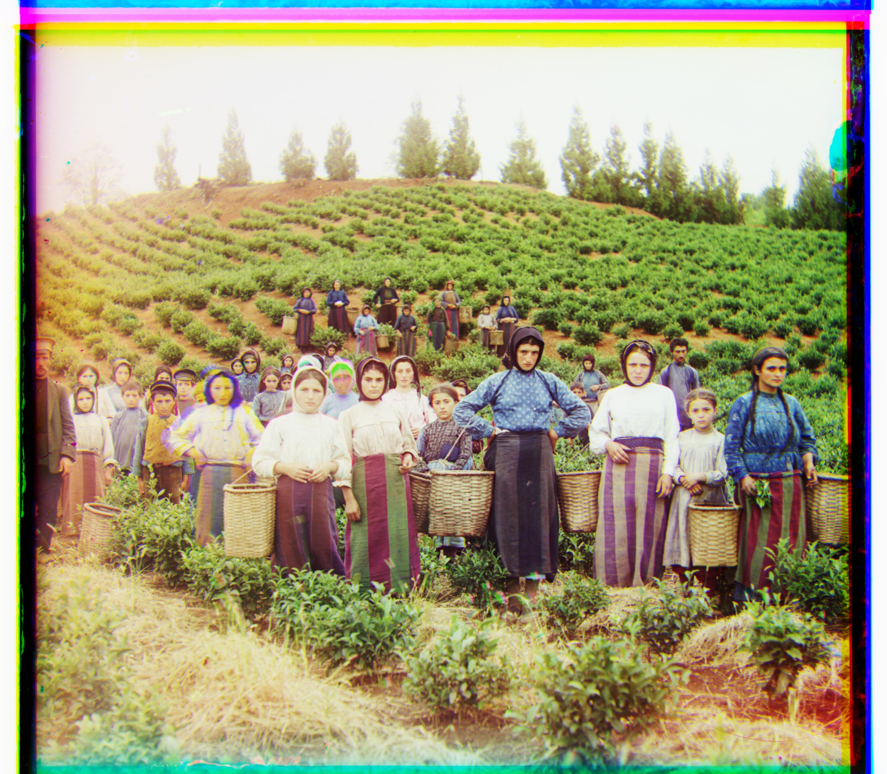
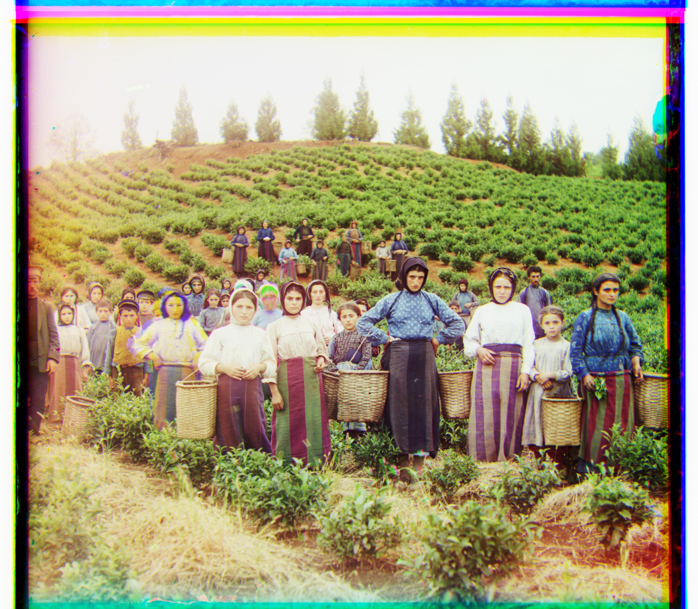

Sergei Mikhailovich Prokudin-Gorskii was a Russian photographer who believed that color images were the future. Well ahead of his time, he envisioned a machine that would be able to render color pictures from 3 filtered black-and-white ones (one filtered red, another blue and another green).
For this reason, with the support of Emperor Nicholas II, he travelled all around Russia taking these sets of three images in anticipation of the future. Unfortunately, due to the Russian Revolution, and the time it took for technology to advance, he was never able to see the result of his work.
However, since most of the pictures ended in the US Library of Congress, today we're able to revisit his work and generate color images from his work.
Here are some examples of the images we're working with:
The idea of this project is that we can use each filtered version of the image as the channels R, G and B of a colored image, and thereby render a color image.
The main challenge we need to resolve for this to work is that we must align the filtered pictures with each other. In order to do this (and since we observe that no rotation is necessary) we can try different alignments and score them using L2 distance between the matrix of pixel intensities. While I briefly experimented with other scoring metrics, L2 proved sufficient for our purposes. As a first approach which worked for lower resolution images, it is sufficient to brute-force search through possible alignments.
For high resolution images, exhaustively checking photo alignments for a range of displacements isn't practical. For that reason, I implemented a pyramid search algorithm. This means that images aren't aligned directly; rather, the image is first downsized until it is small enough that we can do an exhaustive search that guarantees a correct alignment. Then, this alignment information is used to align a higher resolution of the image, and this process is repeated multiple times until we align the original picture.
While the process described up to this point obtained good results for some images, others has alignment problems due to the fact that borders contain unaccounted for noise. For this reason, I decided to agressively crop the images before calculating optimal aligment to avoid this noise. Specifically, I decided to use only the inner quarter of the image for aligment (i.e. I cropped by 25% on each edge). Here is an example of an improvement achieved through this change:
The above procedure was enough to obtain good results for every image but that of the Emir of Bukhara. In the case of this specific picture, the brightness value of the red-filtered image is significantly different to both of the other channels. For this reason, the red filtered image was misaligned from the rest. To solve this, I used a sobel filter to preprocess images to edge version of themselves. By doing this, I was able to reduce the effect of the brightness difference to correctly align the emir picture. I also applied it to the rest by it didn't significantly improve my results. Here's the improvement achieved on the Emir of Bukhara.

Here are the results I obtained for the full set of provided images:

 
